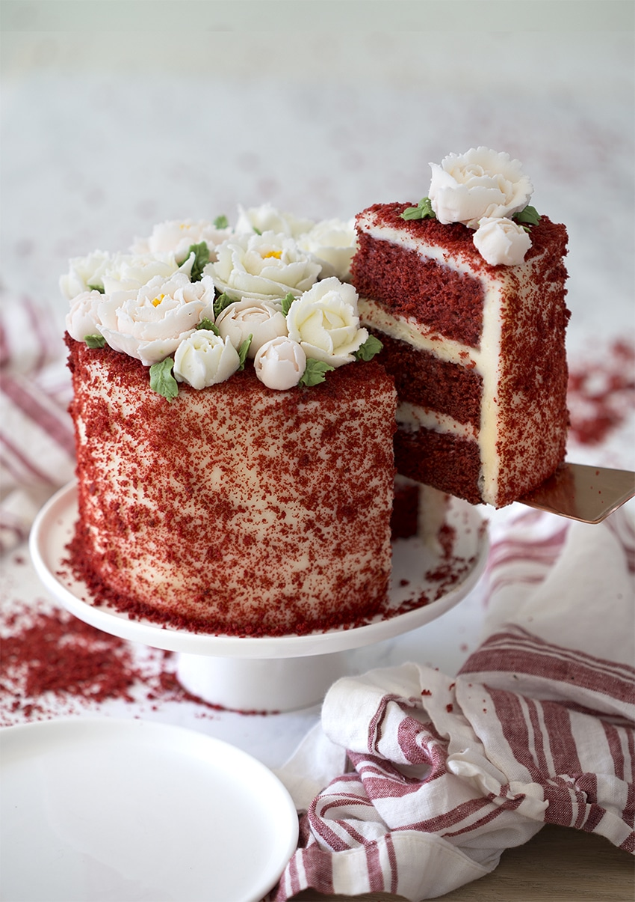

TORTLAR



Artıq 1 ildən çoxdur fəaliyyət göstərən Shellycake.az şirkəti hər bir şəxsin ağız dadına uyğun tortlar və digər şirniyyat növləri hazırlamaqla məşğul olan kiçik bir müəssisədir. Siz online şəkildə sifariş edərək bizdən xüsusi dad və zövqlə hazırlanmış ləzzətli tortlar, krep tortlar və hər növdə şirniyyatlara sahib ola bilərsiniz. Bütün ləvazimatların ən keyfiyyətlisi və yenisi seçilərək alınır. Həmçinin, şirniyyatlar tam gigiyenik və təmiz şəraitdə hazırlanır. Məhz uğurlu fəaliyyəti nəticəsində Shellycake.az şirkəti 2019-cu il 4 mart tarixində Boulevard Hotel Baku Autograph Collection-də baş tutan Golden People Awards mükafat gecəsinə təşkilatı dəstək göstərmiş, həmçinin mükafata layiq görülmüşdür.
Shellycake hər yerdə və hər zaman sizinlə.
Instagram : @shellycake.az
Facebook: ShellyCake
Mobile: +994 50 471 21 80